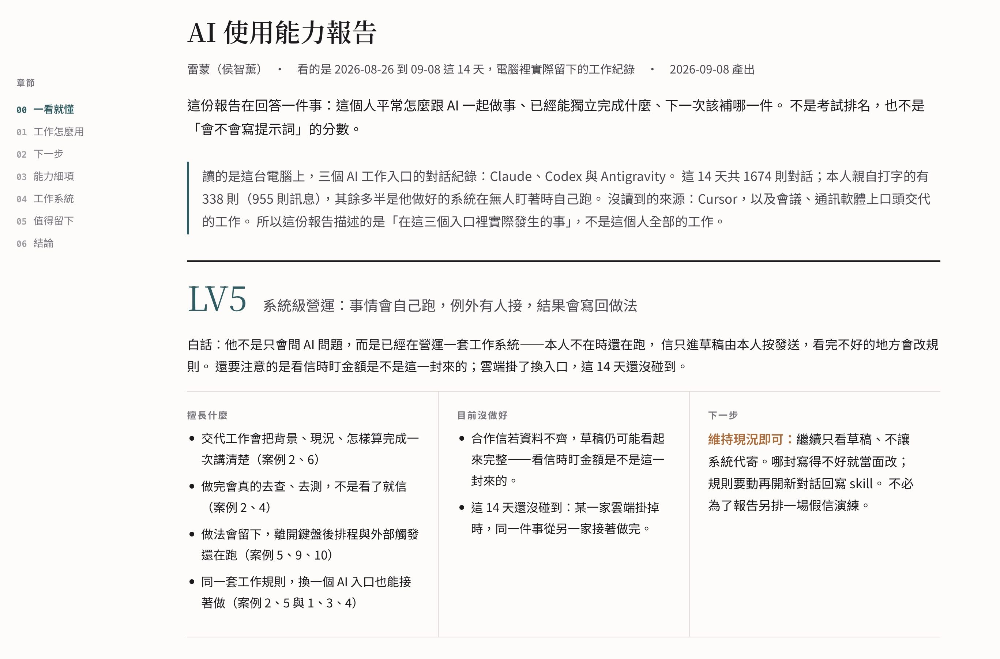
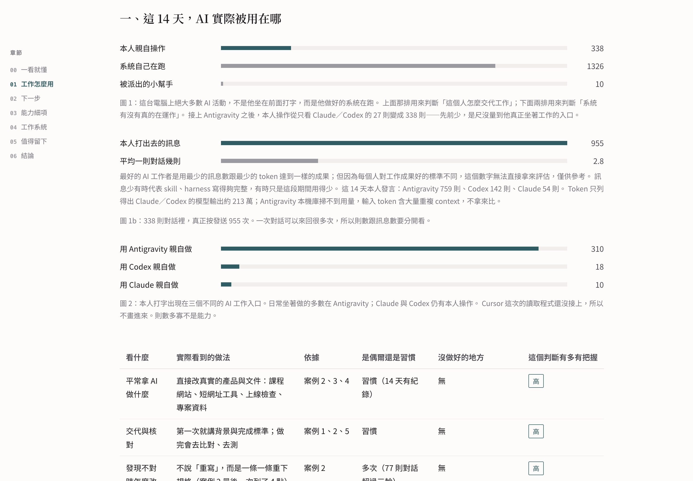
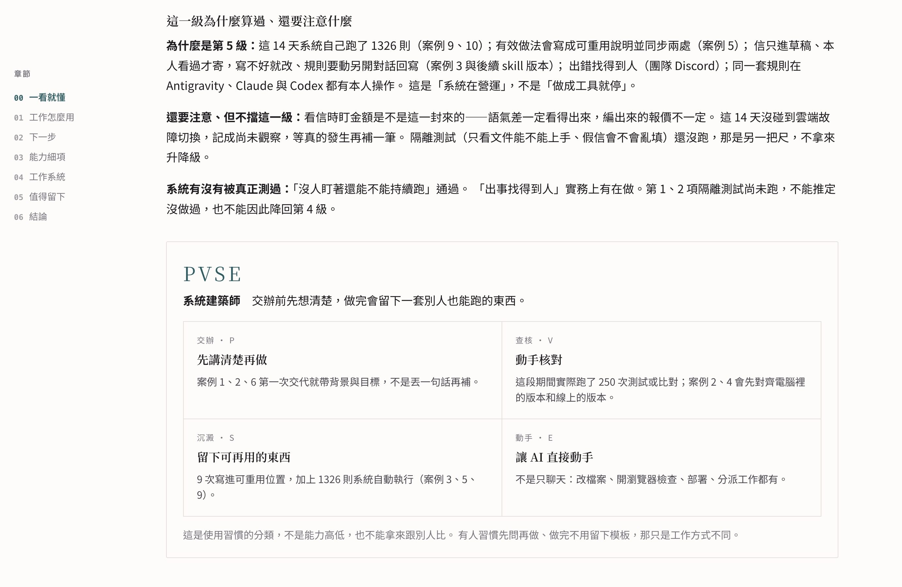
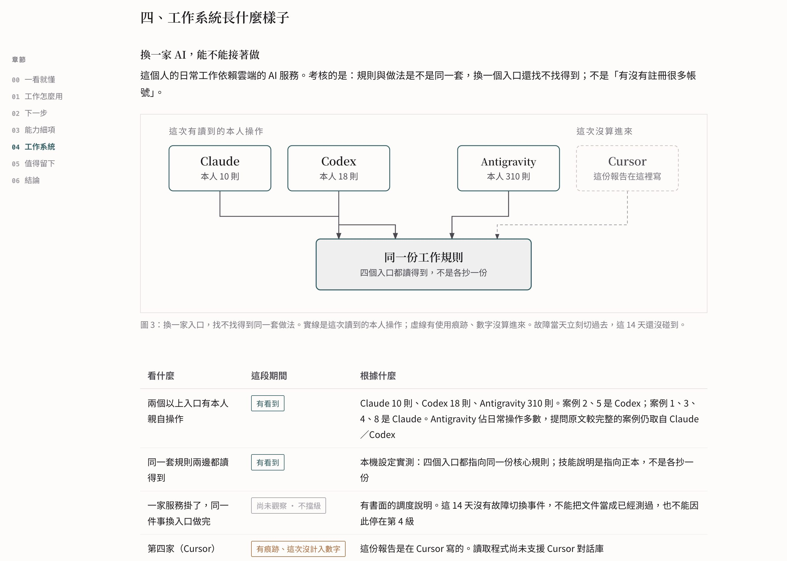

主管問「你最近有在用 AI 嗎」，答案永遠是「有啊很好用」。 問卷讓大家填自己想像中的樣子。面試聽「我最近都有在用」。 這些都評不準。最準的方式，是讓 AI 去讀 AI 的使用紀錄。
下面三張卡可以點進去。LV1、LV3、LV4 各一份虛構完整報告，用來對照會長什麼樣子。 截圖是一份真的跑出來的報告。原始碼在 GitHub，MIT 授權，免費。
點一張，看成果長什麼樣子
LV1
換句話重問
只用網頁聊天，覺得不對就再問一次。
看這份示範報告→LV3
精準下指令
交代清楚、會指出錯、會驗證，還沒留下模板。
看這份示範報告→LV4
模組化使用
做法寫成 skill，有一點排程，系統還沒自己跑。
看這份示範報告→AI 幾級了（ai-level-check）是一套開源 skill。它掃你這台電腦上 Claude Code、Codex、Antigravity 留下的對話紀錄，看這個人怎麼下指令、呼叫了哪些工具、怎麼修正、做出什麼成果，產出一份單檔 HTML 報告。
報告會給三樣東西：LV0 到 LV5 的使用等級、四項系統驗證有沒有被真正測過、以及一個 16 型裡的使用習慣分型。分型是風格，不是分數。一個只會聊天的人，不比把 AI 接成生產線的人差，只是用在不同的地方。
它不給總分，不給百分位，也不說你勝過多少人。那些數字沒有可查證的全球資料庫，寫出來只能是編的。報告講的是這 14 天看見什麼，不預測這個人以後會變成什麼樣。
人評估人有三個躲不掉的問題：看不到、記不住、有情緒。主管看不到你半夜來回八次修好一個問題，只看得到週會上三分鐘口頭報告。他自己也評不準「AI 用得好」這件事，因為能力不在會不會講 prompt engineering，而在交辦時給不給完成標準、答錯時指不指得出哪裡錯、做完有沒有留下下次能用的東西。這些藏在對話紀錄裡。
問卷的問題是：大家會照著自己想像中的樣子填。口頭自述也一樣。AI 幾級了改走另一條路：紀錄本來就在硬碟上，本機掃、不上傳原始對話。你看到的是這 14 天實際發生過什麼，不是他臨場編的故事。
面試可以用，但有三條界線：本人在自己的電腦跑、用螢幕分享就好、不能單獨當作錄用或淘汰依據。只用 ChatGPT 網頁版的人，本機常常掃不到紀錄，那要改走貼上模式，不能直接判他比較弱。
等級是行為門檻，不是考試分數。沒掃到紀錄就寫「無法定級」，不會預設成 LV0。沒讀到較高等級的用法，只能說這段期間沒讀到，不能說這個人不會。
| 等級 | 一句話 |
|---|---|
| LV0 | 拿到答案就用，該補的條件、該查的數字沒處理 |
| LV1 | 覺得不對就再問一次，靠換說法推進 |
| LV2 | 某一類工作已經能穩定交給 AI 做完 |
| LV3 | 交代得清楚；答錯時指得出哪裡不對 |
| LV4 | 把有效做法做成別人也能用的模板或自動流程 |
| LV5 | 整套工作會自己跑；例外有人接或會停；結果寫回做法 |
LV4 和 LV5 一定要有實作證據。光有構想、自述或 AI 宣稱完成，都不算。依賴雲端模型時，LV5 還要兩個入口讀同一套規則；一家服務掛了立刻切，窗口內沒發生，寫尚未觀察，不擋級。
等級旁邊還有四項系統驗證，跟等級分開算：只看文件，陌生人做得完嗎；資料不齊時會停嗎；沒人盯著還能持續跑嗎；出事找得到人嗎。四項通過不會自動變成 LV5；沒測也不自動降級。隔離測試沒跑，不能推定沒做過。
本機裝好 skill，對 Claude Code、Codex、Cursor 或 Antigravity 說「幫我跑這兩週的 AI 使用檢核」。它會先經過同意閘門，再用純標準庫的腳本掃本機紀錄，產出證據包，再依公開的判準寫報告。腳本不連網、不上傳。
只用網頁版 ChatGPT、Gemini 或 Claude 的人，打開專案裡的貼上模式 Prompt，把最近的對話貼進去。這條路看得到問答習慣，看不到排程和本機腳本，等級通常最多穩到 LV3。不要把整份 skill 說明貼給網頁版，那是給會掃硬碟的 agent 用的。
最短安裝是把 repo clone 下來，在 Claude Code 的 skills 目錄做一個符號連結，然後直接講「幫我跑這兩週的 AI 使用檢核」。只想先看數字、不要完整報告，也可以本機跑 collect.py，純標準庫，不用裝套件。
程式要先把人打的字和機器打的字分開。本人寫的 bot 半夜自己跑出來的對話，格式跟真人發言一模一樣；不分流的話，一萬六千字的「使用者發言」其實是 system prompt，後面每一個結論都會錯。自動化紀錄另外列，用來回答「他不在場的時候還跑不跑」。
「有沒有做自動化」問得太籠統，答案永遠是「有啊我有用」。報告改看五種具體的扳機：時間到就動、外面一推就動、進出關卡、推上去就上線、倒下拉起來。覆蓋度不是分數。一個內容工作者常常只需要前兩種；五顆全用過，不比兩顆咬合來得好。沒看到某顆，只代表這 14 天沒動到，可能三個月前就設好、一直在跑。
真的跑出來的報告是單檔 HTML，可以列印。開頭先講讀到什麼、等級、擅長什麼、沒做好什麼、下一步只補一件事。後面六節都指得出案例。下面四張是一份 14 天的真報告截圖；點上面三張卡，可以看 LV1、LV3、LV4 的虛構完整頁。




截圖是作者自己這兩週的紀錄。Demo 頁裡的人名、工作、數字都是編的，避免把別人的對話公開上網。
原始對話不離開這台電腦。上傳的只有你自己決定要不要推的報告。證據包預設不進 git。沒有遠端集中掃描，主管拿不到別人的原始對話。規則也寫死：不能單獨當作考績、升遷或解僱的依據，不接進自動化人事流程。團隊要導入時，做法是自願、本人自己跑、本人決定推不推。
對話裡若有客戶資料，可以用不含原文的模式跑，報告只留計數與行為描述。預設也會遮掉家目錄、Email、電話和常見金鑰格式，那是最低限度，不是保證。
報告還會給一個四個字母的分型，例如 PVSE（系統建築師）或 QAOC（閒聊夥伴）。四個軸分別是：交辦時先講清楚還是先問再說、做完會不會動手核對、有沒有留下可再用的東西、以及讓 AI 改檔還是只聊天。組出來的 16 型是給課堂和團隊工作坊用的，方便開口聊「我們全隊都不查核」這種事。
分型不能換算成等級，也不能拿來比誰比較強。一個 QAOC 可能是 LV3，一個 PVSE 也可能只到 LV2。報告每次出現分型，都會把這句話一起寫上。
同一個 ai.lifehacker.tw 底下，還有 AI Agent 學習站與陪跑課。那些頁面是課程、關卡與報名；關卡題目爬蟲讀不到。這頁是開源工具的說明：搜「AI 幾級了」應該先落到這裡，看等級怎麼判、報告長什麼樣子、紀錄會不會上傳，再決定要不要看三份虛構示範，或去本機跑自己的報告。
這套工具由 雷蒙（侯智薰） 開源。起點是 有序設計的陳敬儒 約吃飯時聊到：公司要怎麼知道團隊的 AI 能力到哪裡。問卷不準，口頭報告更不準。結論是應該讓 AI 去讀 AI 的使用紀錄。他先做了一份可以貼給 AI 的檢核 Prompt；後面補上本機真實紀錄、人機分流、人物志分型，以及用 git 把每一期釘住。
專案永遠免費。誤判可以開 issue。工程師、行銷、設計、客服、會計的用法長得不一樣，各行各業把「用得好」在自己職能裡長什麼樣子補進來，它才會變成真的通用。
原始碼與安裝：github.com/Raymondhou0917/ai-level-check
想把 AI 真的用在工作裡：AI Agent 學習站 · 陪跑課課綱